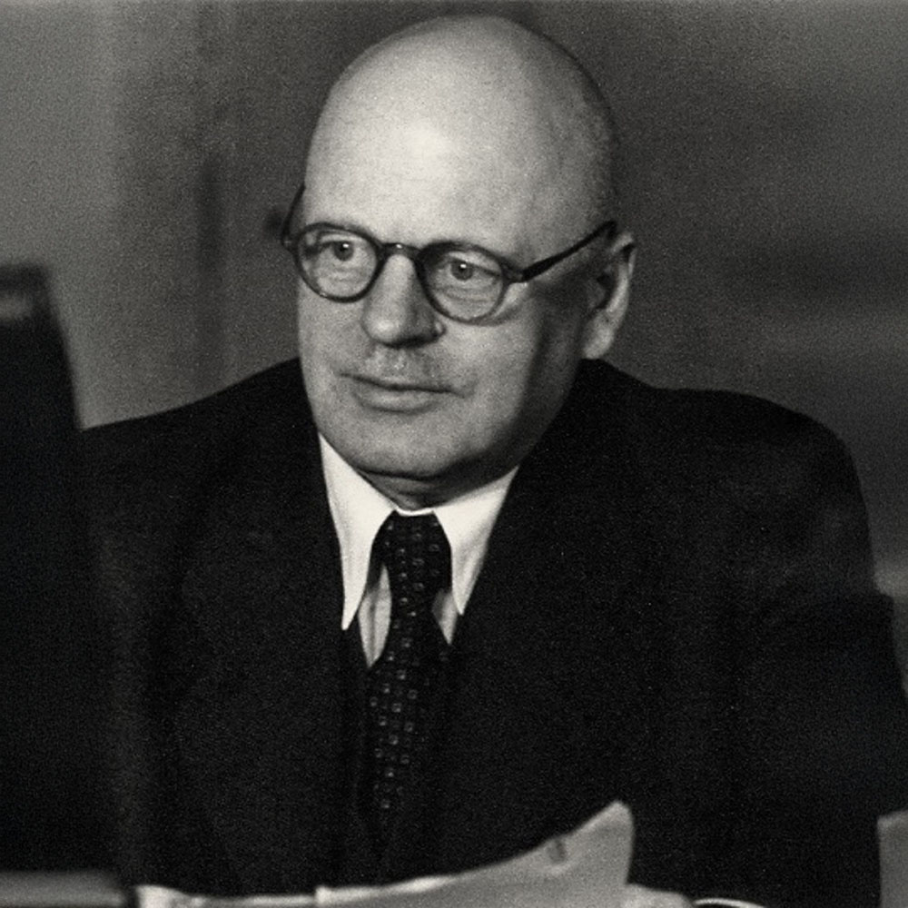
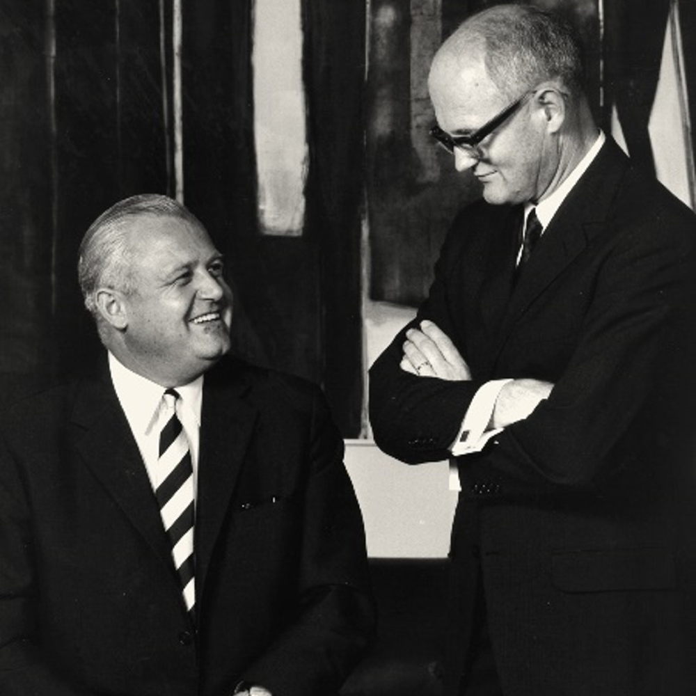
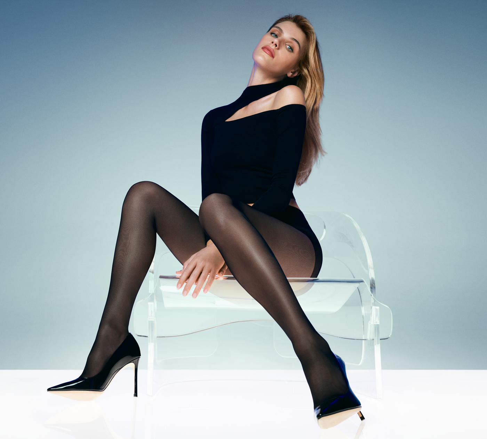
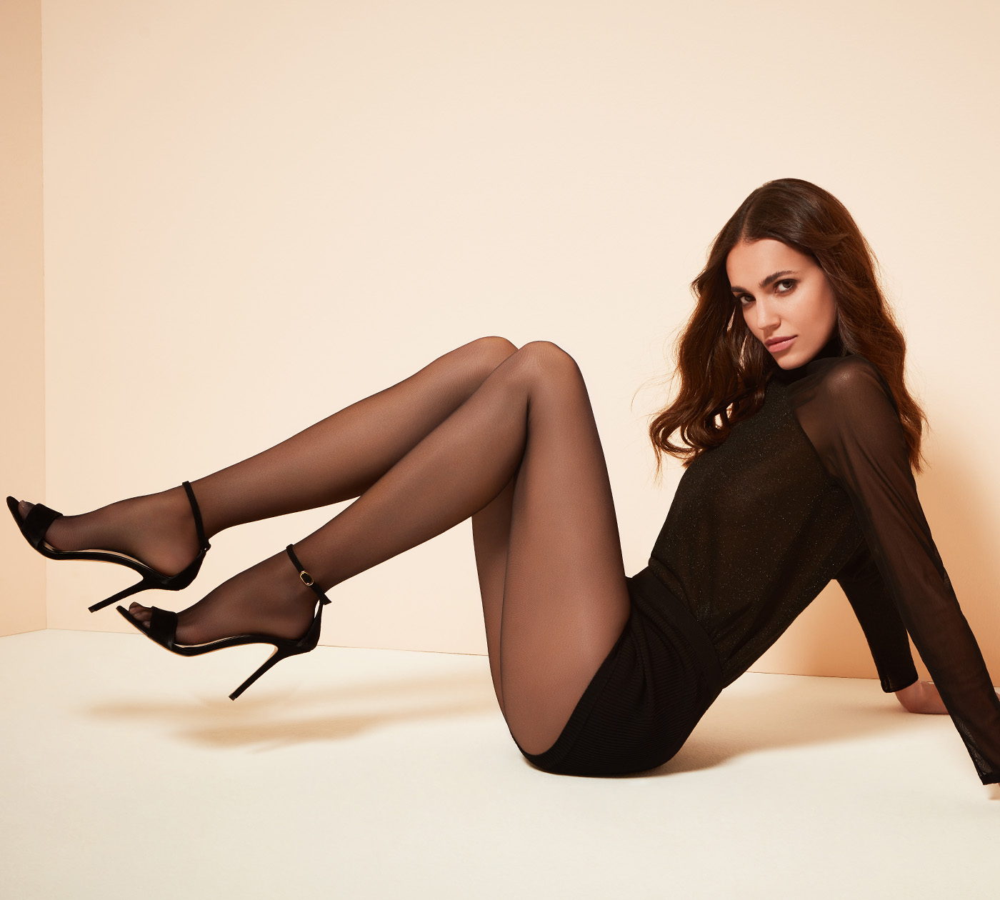
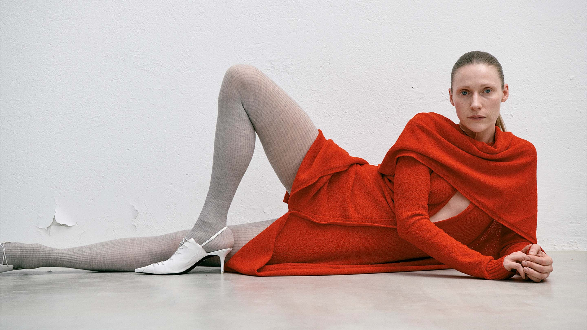

1895
FALKE
Мастерская в Шмалленберге
8 мая Франц Фальке-Роэн основывает мастерскую. В официальной истории его работа кровельщиком связана с сезонной занятостью в вязальном производстве.
Официальная история ↗Профиль бренда →Ссылка на событие ↗Люди, материал и время
Архивные лица, проверенные даты и события, которые меняли чулочную индустрию.
1895 — 1996
Девять остановок — от маленькой мастерской до нескольких поколений и новых марок. Выберите год и откройте его источник.
1895
FALKE
8 мая Франц Фальке-Роэн основывает мастерскую. В официальной истории его работа кровельщиком связана с сезонной занятостью в вязальном производстве.
Официальная история ↗Профиль бренда →Ссылка на событие ↗1918
FALKE
Компания приобретает прядильное предприятие J. Meisenburg. История готовых изделий связана также с развитием производства пряжи.
Официальная история ↗Профиль бренда →Ссылка на событие ↗
1928
FALKE
После смерти основателя управление переходит к Францу Фальке-младшему. Семейная хронология помогает связать имена с этапами компании.
Официальная история ↗Профиль бренда →Ссылка на событие ↗
1951
FALKE
Сыновья принимают управление компанией. Официальная история связывает этот этап с расширением ассортимента и развитием экспорта.
Официальная история ↗Профиль бренда →Ссылка на событие ↗
1966
Golden Lady
Корпоративная хронология Golden Lady Company относит создание компании к 1966 году. Позднее группа объединит несколько самостоятельных марок.
Официальная история ↗Профиль бренда →Ссылка на событие ↗
1977
Cecilia de Rafael
Бренд указывает 1977 год и Барселону как начало своей истории. На нынешнем сайте этот рассказ соединён с юбилейной линией 1977–2027.
Официальная история ↗Профиль бренда →Ссылка на событие ↗
1990
FALKE
Пауль Фальке-младший и Франц-Петер Фальке принимают управление. На сайте поколения семьи образуют отдельные главы единой истории.
Официальная история ↗Профиль бренда →Ссылка на событие ↗
1992
OMSA
OMSA входит в Golden Lady Company. Это дата изменения принадлежности, а не основания марки.
Официальная история ↗Профиль бренда →Ссылка на событие ↗
1996
Gabriella
Gabriella указывает 1996 год основания и семейный характер компании. Сегодня официальный сайт связывает производство с площадкой на улице Brukowa в Лодзи.
Официальная история ↗Профиль бренда →Ссылка на событие ↗Исторический лонгрид
История колготок соединяет крой, химию, промышленность и изменение социальных норм. Вместо сенсационных легенд ниже приведены основные этапы и ссылки на источники.
До индустриальной эпохи
Плотно облегающие чулочные изделия веками были частью европейского мужского костюма. Шоссы и позднейшие чулки носили с короткой верхней одеждой, а материал и качество работы показывали статус владельца.
Шерсть, лён и шёлк не обладали эластичностью современного эластана. До вязальных машин чулки изготавливали вручную, а развитие производства сделало сложную форму более доступной.

1935 · Материаловедение
Команда Уоллеса Карозерса в DuPont исследовала синтетические полимеры и в 1935 году получила материал, известный как нейлон 6.6. Американское химическое общество отмечает эту работу как важную веху полимерной химии.
Новая нить оказалась подходящей для тонких чулок: она сочетала прочность, гладкость и быстрое высыхание. Нейлон не был просто новой модой, он стал примером массового применения лабораторного материала в повседневной жизни.

1940-е · Война и дефицит
Во время Второй мировой нейлон использовался не только для чулок, но и для технических изделий, включая парашюты и корд. Перераспределение производства ограничивало гражданский ассортимент и делало чулки дефицитом.
В этот период получили известность косметические имитации чулок и нарисованный задний шов. История показывает, насколько значимым предметом гардероба стало новое синтетическое изделие всего за несколько лет.

1958 · Эластичность
Химик Джозеф Шиверс из DuPont изобрёл эластичное волокно Fiber K в 1958 году. Позднее оно стало известно под торговым названием Lycra, а общими терминами являются спандекс и эластан.
Способность растягиваться и возвращаться к форме изменила посадку одежды. В колготках эластан помогает полотну следовать за ногой и уменьшает образование складок, хотя окончательный результат зависит от плетения и размера.
1960-е · Новая форма
Развитие колготок связано с изменением длины юбок, производством эластичного трикотажа и стремлением убрать пояс и подвязки из видимой зоны. Единое изделие от талии до стопы стало логичным ответом на новый силуэт.
Мода 1960-х также расширила палитру и рисунки. Колготки перестали быть только телесной или чёрной базой и стали самостоятельным визуальным акцентом.

Сегодня · Разнообразие
Современный рынок включает расширенные размерные системы, специализированные мужские модели, медицинскую компрессию, переработанный полиамид и высокопрочные полимеры. Это разные направления, а не одно общее обещание качества.
Snag перестраивает размер под фигуру и рост, Sheertex работает с высокопрочным трикотажем, а Swedish Stockings использует переработанное сырьё. Их истории показывают, что инновация может касаться не только нити, но и системы размеров и философии потребления.
